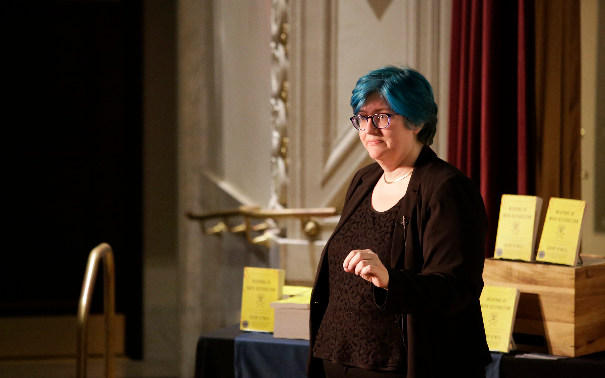

Tech Heroes
Researchers and writers who expose bias in algorithms and push for fairer technology.
Dr. Joy Buolamwini
Joy Buolamwini is a computer scientist and digital activist focused on exposing and fighting harmful biases in artificial intelligence algorithms. She received her master's degree in Media Arts & Sciences from MIT, and started this journey after conducting research that revealed severe racial and gender biases in facial recognition systems. She founded the Algorithmic Justice League, has written several award-winning works, and advises world leaders on building equitable AI policies.
Joy's personal website: Poet of Code

Cathy O'Neil
Cathy O'Neil is a mathematician, data scientist, and author of "Weapons of Math Destruction." She is the founder of O'Neil Risk Consulting & Algorithmic Auditing, which helps develop safe, fair, and trustworthy algorithms. Her work surrounding WMDs exposed hidden biases and pushed for transparency, fairness, and regulations.
Read her award-winning book: Weapons of Math Destruction